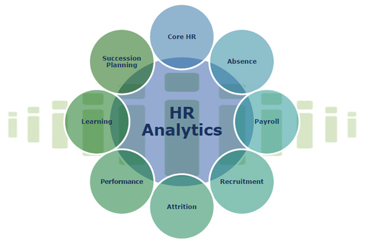

A Quick Look at my Achievements
Education
California State University-Fullerton, Mihaylo College of Business and Economics
Master of Science(M.S.), Information Systems and Decision Sciences - Business Analytics
2016 – 2018
Activites and Societies:Vice President of Marketing for Business and Data Analytics Club (BDAC)
Rajiv Gandhi Prodyogiki Vishwavidyalaya
Bachelor of Engineering(B.E.), Computer Science
2012 – 2016
Professional Experience
Graduate Research Assistant/Analyst [05/2017 - present]
California State Univeristy Fullerton
- Create dashboards using Tableau and PowerBI which displayed insights and reduced manual work by 25%
- Acquire and analyze data from external sources for student satisfaction rate, probation rate, and graduation rate
- Create dashboards using Tableau and PowerBI that displays actionable insights
- Write SQL queries to gather and aggregate data to design dashboards
- Summarized data using Pivot tables and generated reports in Excel
- Implement and maintain applications to track and analyze enrollment and graduation data
- Manage communications with prospective and current students
- Created training manuals and translated business requirements into technical documentation
Impact:
Responsibilites:
Technologies/skills used:
Tableau, Power BI, SQL, time management, communication, presentation skills, leadership, MS Access database, Excel, pivot table/chartsData Analyst Intern (Product and Customer Insights) [05/2018 - 08/2018]
American Family Insurance
- Developed 2 new product metrics and provided actionable insights on the ongoing development of customer metrics
- Reduced manual work for analysis by creating automated Tableau dashboards and R scripts which saved 240 business hours annually
- Collaborated with cross-functional teams to develop new customer and product metrics and provided insights about them by designing automated Tableau dashboards
- Utilized SQL, HQL(Hive), JQL, R to provide handle ad hoc requests about customer/products and optimized queries to reduce execution time by 30%
- Integrated data from different sources and created automated dashboards using Tableau, R scripts to display actionable insights about the customer, product, trends and presented to diverse stakeholders
Impact:
Responsibilites:
Technologies/skills used:
Tableau, R, Python, JIRA, SQL, PostgreSQL, Hadoop, Hive, JQL, Microsoft Excel, Greenplum, PostgreSQL, metric development, automation reports, leadership, managementRecent Projects
Student Academic Performance Analysis

Human Resource Employee Attrition
New York Property Sales Analysis